#1 · LAUSDT09-02 23:00 → 09-03 00:00
-1.23%
entry 0.06665 stop 0.06583 target 0.06829 exit 0.06583 stop -1.23% fwd +1h -5.94% +4h -6.41% +8h -4.16% +24h -3.50%
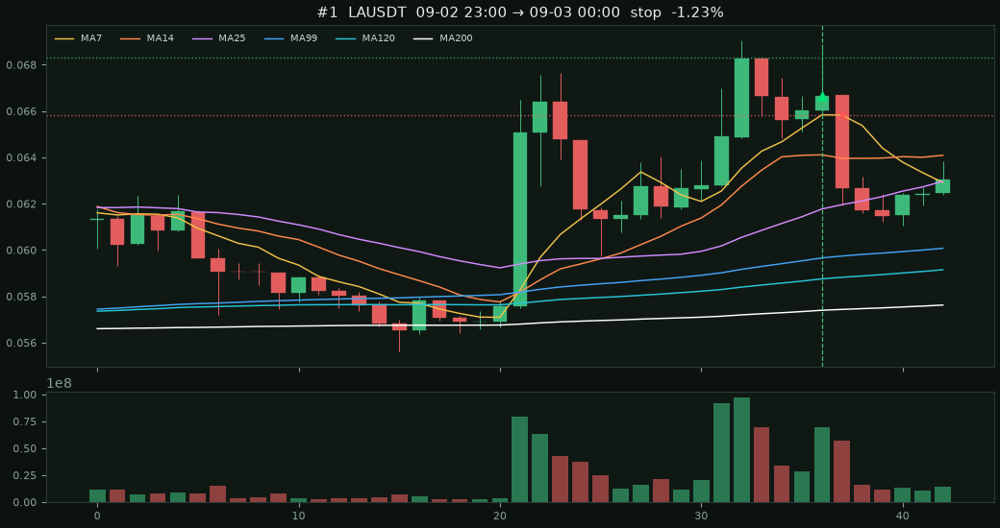
USDT 永續 · MA7>14>25>99>120>200 且收盤量 > 前一根 × 2
收盤進場；停在訊號 K 低（太窄則 0.5%）、目標 2R、或 8 根時間停。
同標的重疊訊號預設不重做。加總％是各筆相加，不是組合複利。
掃 231 檔 · 原始訊號 317 · 進場 223
· 陽線 140
出場：2R 54 · 停損 100 · 時間 43 · 未平 26
· 收盤後 +1h +0.02% · +4h +0.78%
· +8h +1.04% · +24h +3.84%
entry 0.06665 stop 0.06583 target 0.06829 exit 0.06583 stop -1.23% fwd +1h -5.94% +4h -6.41% +8h -4.16% +24h -3.50%

entry 4.668 stop 4.49 target 5.024 exit 5.024 target +7.63% fwd +1h -1.52% +4h +2.38% +8h +5.57% +24h +1.41%
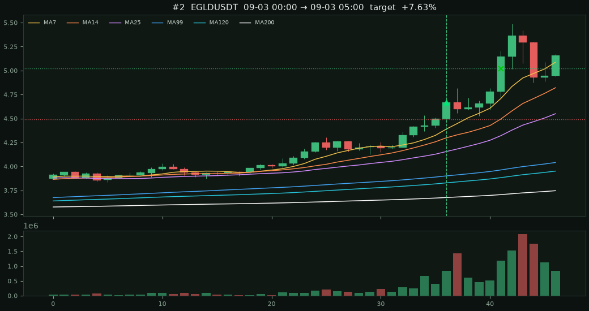
entry 0.006287 stop 0.006153 target 0.006555 exit 0.006308 time +0.33% fwd +1h -1.15% +4h +0.27% +8h +0.33% +24h +1.94%
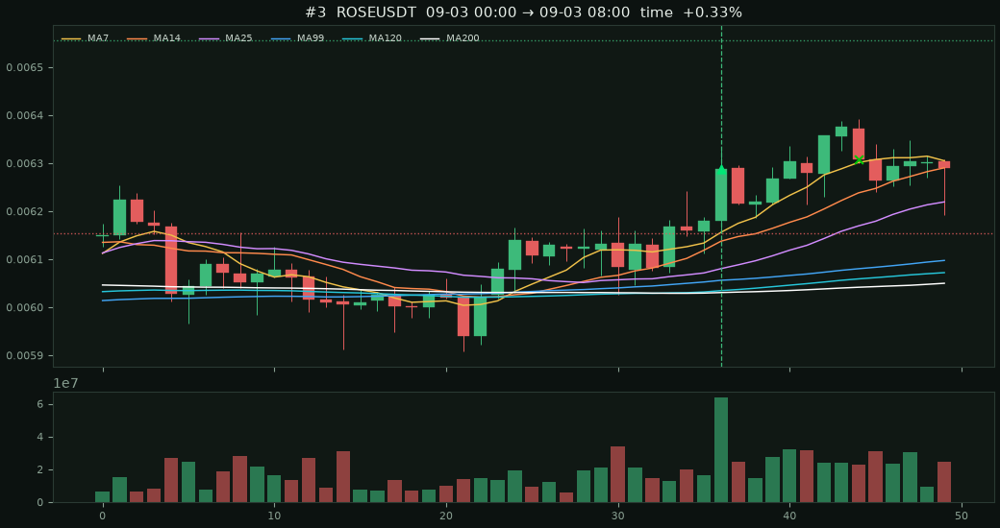
entry 0.50067 stop 0.40903 target 0.68395 exit 0.68395 target +36.61% fwd +1h +2.59% +4h +0.92% +8h -3.18% +24h -1.34%
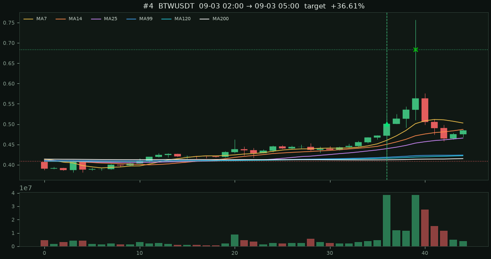
entry 0.2667 stop 0.2641 target 0.2719 exit 0.2641 stop -0.97% fwd +1h -0.11% +4h -0.07% +8h +0.07% +24h +2.62%
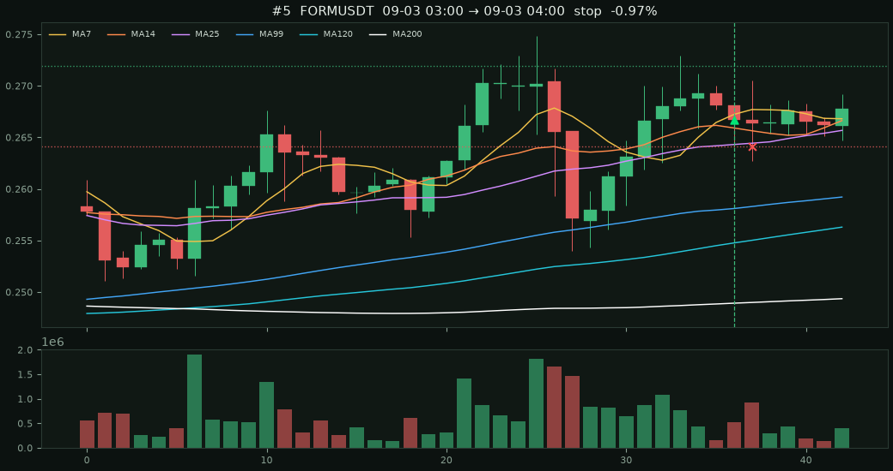
entry 513.21 stop 489.4 target 560.83 exit 489.4 stop -4.64% fwd +1h -0.95% +4h -3.67% +8h -1.09% +24h +2.89%
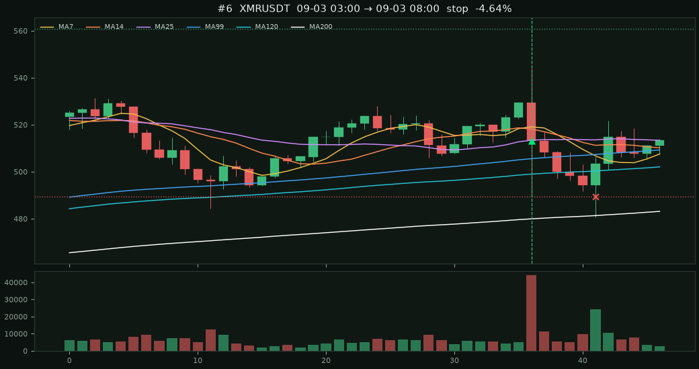
entry 0.023549 stop 0.022829 target 0.024989 exit 0.022829 stop -3.06% fwd +1h -0.36% +4h -2.63% +8h -9.45% +24h -18.07%
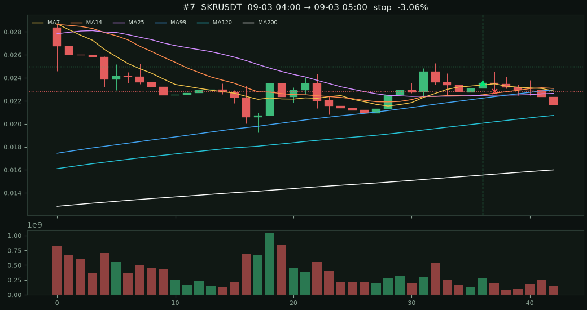
entry 0.18093 stop 0.17084 target 0.20111 exit 0.17961 time -0.73% fwd +1h -2.30% +4h -0.01% +8h -0.73% +24h -22.44%
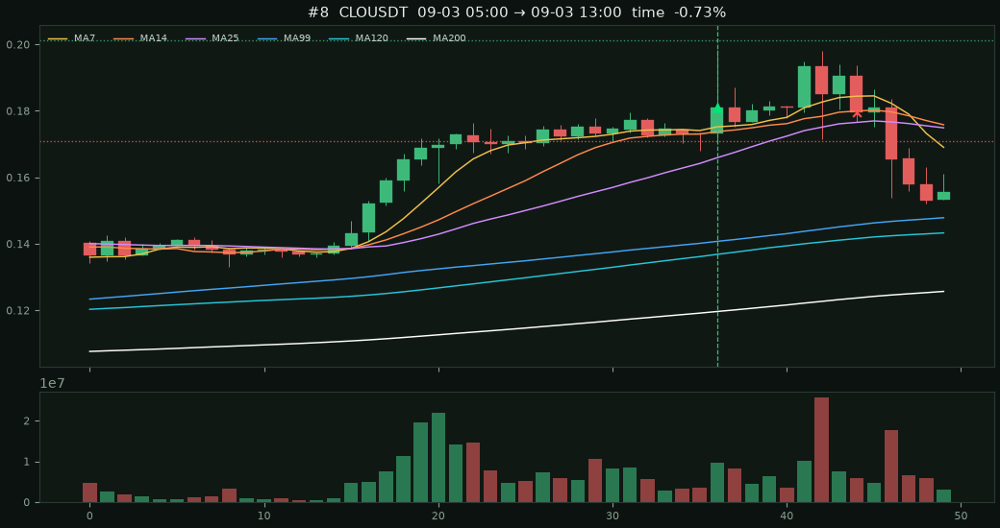
entry 0.7929 stop 0.7855 target 0.8077 exit 0.8077 target +1.87% fwd +1h +0.72% +4h +3.05% +8h +1.83% +24h +0.50%
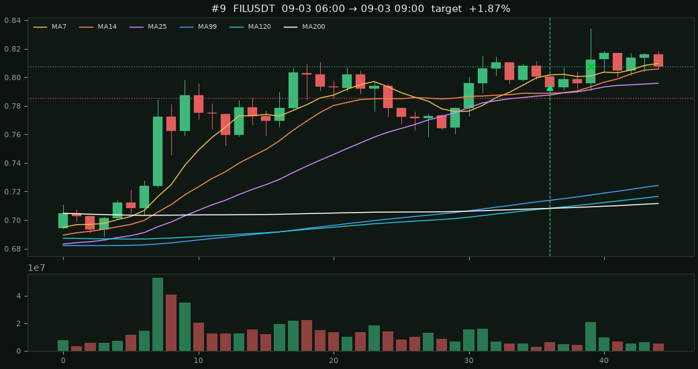
entry 3.009 stop 2.99395 target 3.03909 exit 3.005 time -0.13% fwd +1h +0.00% +4h +0.07% +8h -0.13% +24h -2.73%
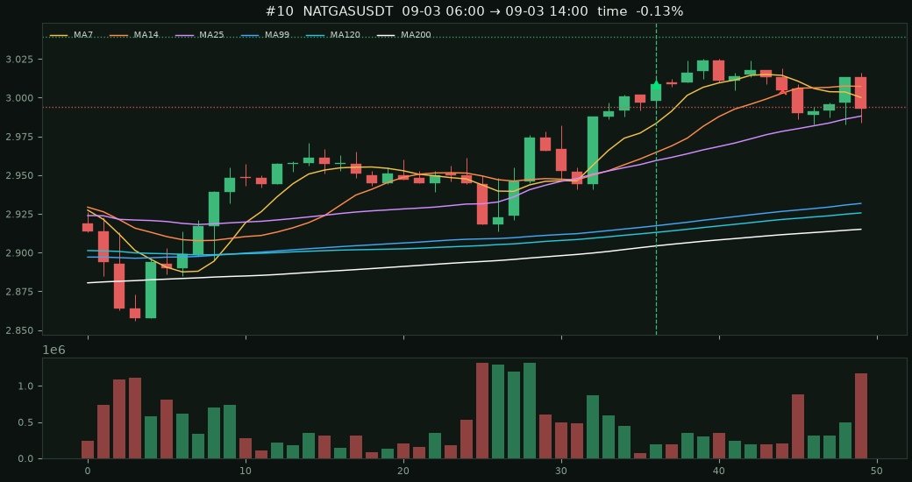
entry 1282.89 stop 1265 target 1318.67 exit 1318.67 target +2.79% fwd +1h +3.57% +4h +1.48% +8h +1.58% +24h +8.56%
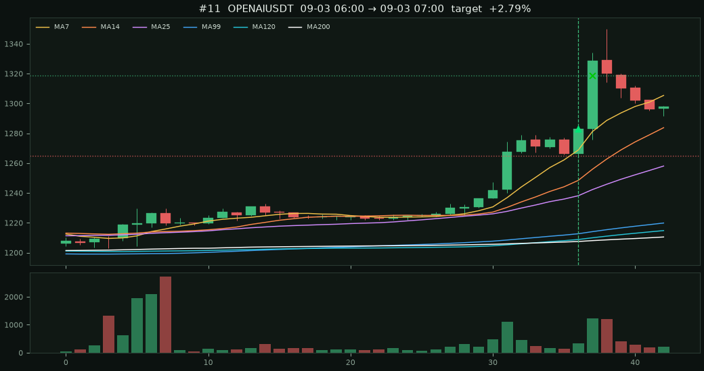
entry 0.055 stop 0.054725 target 0.05555 exit 0.05555 target +1.00% fwd +1h +0.22% +4h +1.05% +8h +1.49% +24h -3.71%
entry 0.05094 stop 0.05065 target 0.05152 exit 0.05152 target +1.14% fwd +1h +0.31% +4h +0.92% +8h +1.41% +24h +3.77%
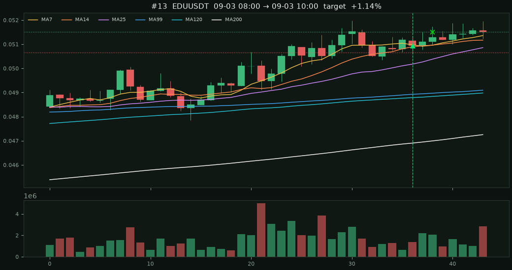
entry 1541.63 stop 1533.92 target 1557.05 exit 1533.92 stop -0.50% fwd +1h -0.01% +4h +0.38% +8h +0.06% +24h +1.37%
entry 13.8 stop 13.731 target 13.938 exit 13.938 target +1.00% fwd +1h +0.00% +4h +0.65% +8h +0.07% +24h +2.61%
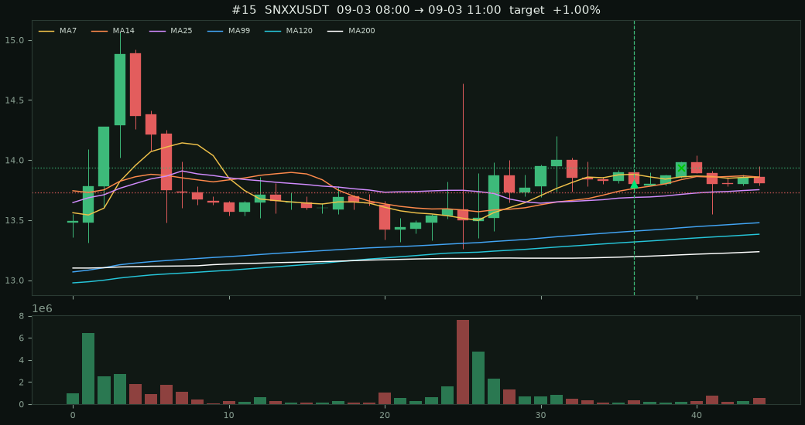
entry 95.77 stop 94.9 target 97.51 exit 94.9 stop -0.91% fwd +1h -0.36% +4h -1.57% +8h +1.10% +24h +0.19%
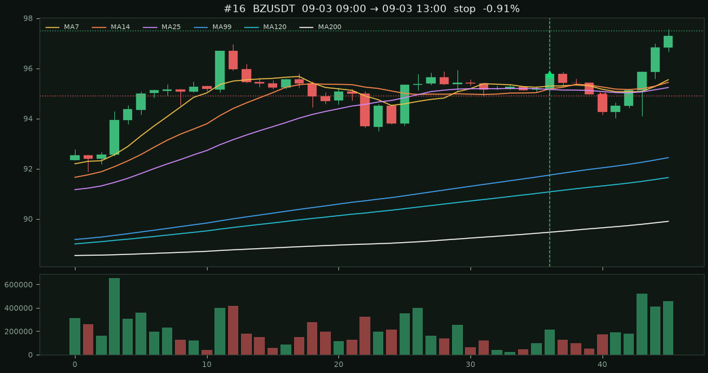
entry 0.2678 stop 0.2647 target 0.274 exit 0.2647 stop -1.16% fwd +1h +0.82% +4h -0.15% +8h +2.54% +24h +1.68%
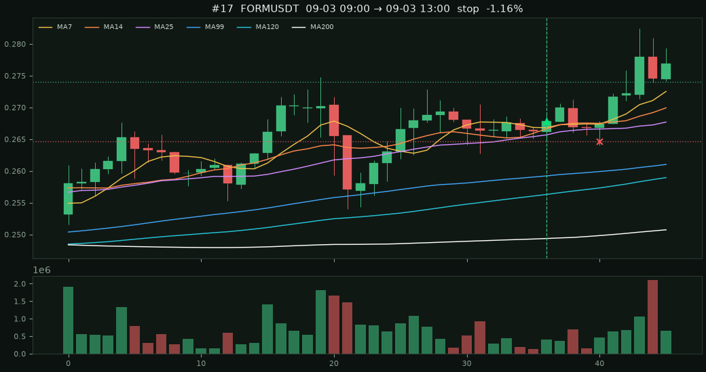
entry 0.014146 stop 0.013714 target 0.01501 exit 0.013714 stop -3.05% fwd +1h -2.65% +4h -6.50% +8h -9.73% +24h +2.85%
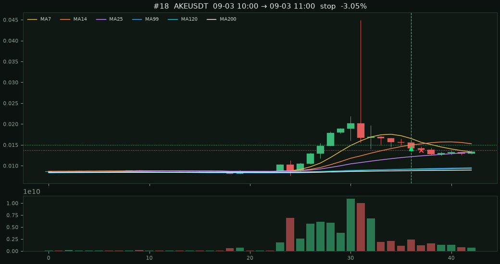
entry 0.13196 stop 0.12386 target 0.14816 exit 0.13532 time +2.55% fwd +1h -3.62% +4h +2.27% +8h +2.55% +24h +4.19%
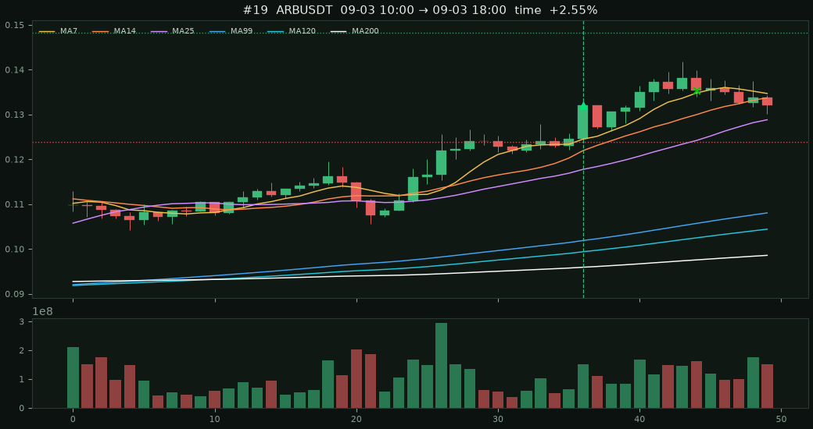
entry 0.017316 stop 0.014636 target 0.022676 exit 0.016076 time -7.16% fwd +1h -0.04% +4h +15.94% +8h -7.16% +24h -5.50%
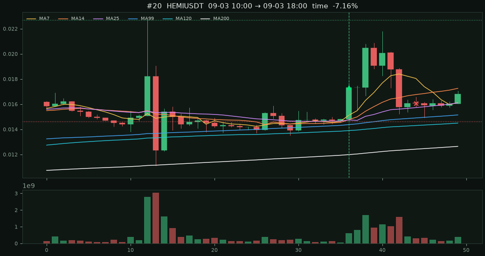
entry 598.47 stop 595.478 target 604.455 exit 597.72 time -0.13% fwd +1h +0.27% +4h +0.00% +8h -0.13% +24h +2.80%
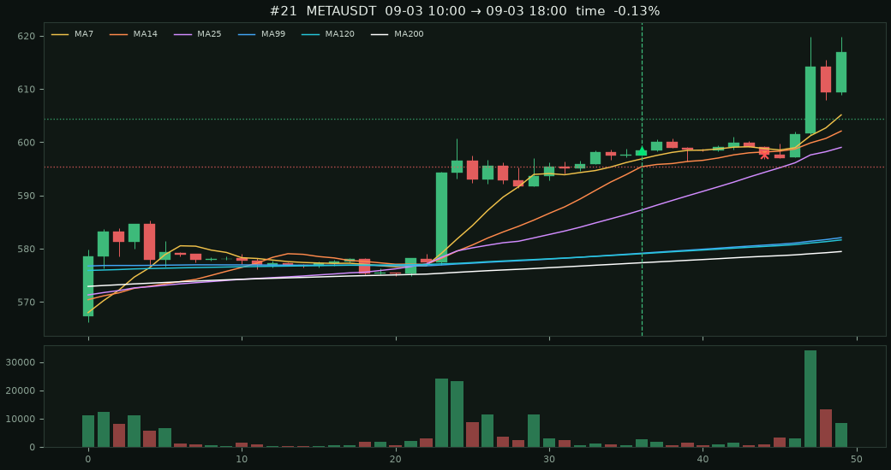
entry 0.02957 stop 0.02765 target 0.03341 exit 0.02765 stop -6.49% fwd +1h -11.57% +4h -9.06% +8h -5.99% +24h -0.81%
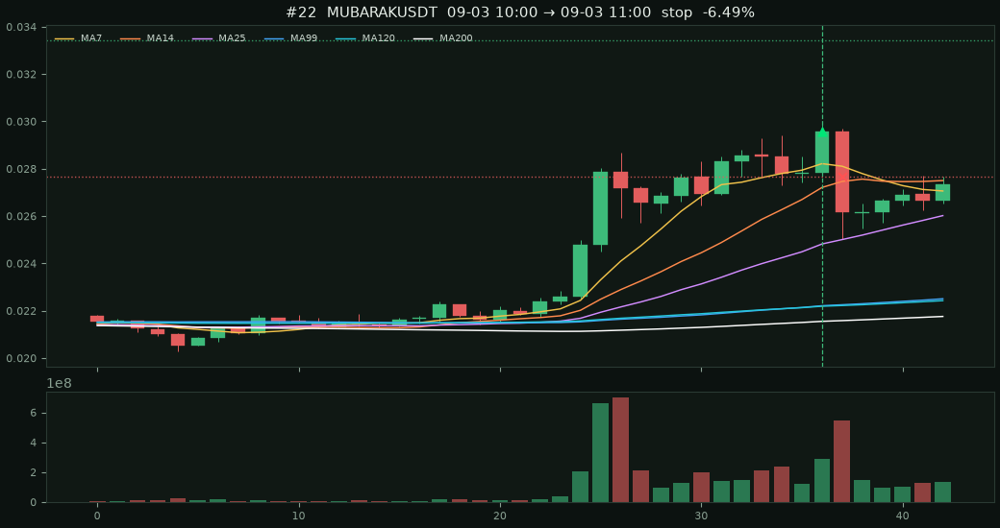
entry 0.06333 stop 0.0623 target 0.06539 exit 0.0623 stop -1.63% fwd +1h -0.65% +4h +0.71% +8h +0.36% +24h +3.88%
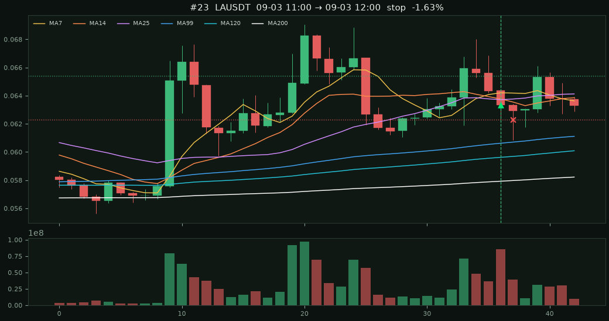
entry 954.32 stop 945 target 972.96 exit 945 stop -0.98% fwd +1h -0.07% +4h -0.60% +8h -0.81% +24h +1.62%
entry 30.42 stop 29.81 target 31.64 exit 29.81 stop -2.01% fwd +1h -0.20% +4h -1.22% +8h -1.61% +24h +3.09%
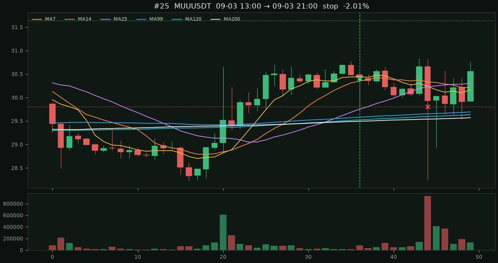
entry 1301.33 stop 1294.42 target 1315.15 exit 1315.15 target +1.06% fwd +1h +0.14% +4h +1.29% +8h +0.93% +24h +5.82%
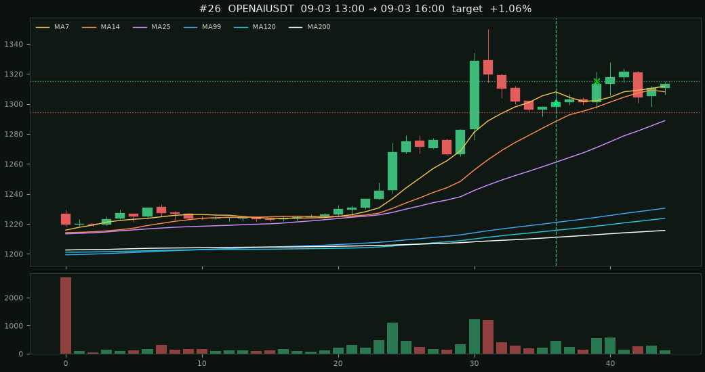
entry 0.00629 stop 0.006191 target 0.006488 exit 0.00624 time -0.79% fwd +1h +0.02% +4h -0.46% +8h -0.79% +24h +1.14%
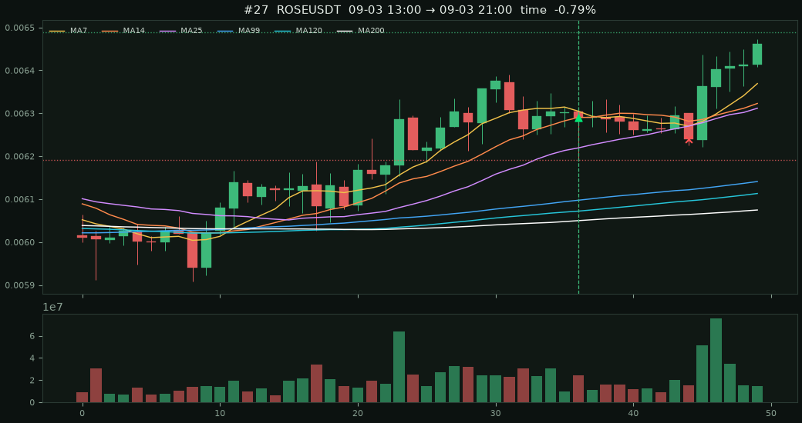
entry 13.8 stop 13.55 target 14.3 exit 13.55 stop -1.81% fwd +1h +0.00% +4h -0.87% +8h +0.58% +24h +5.14%
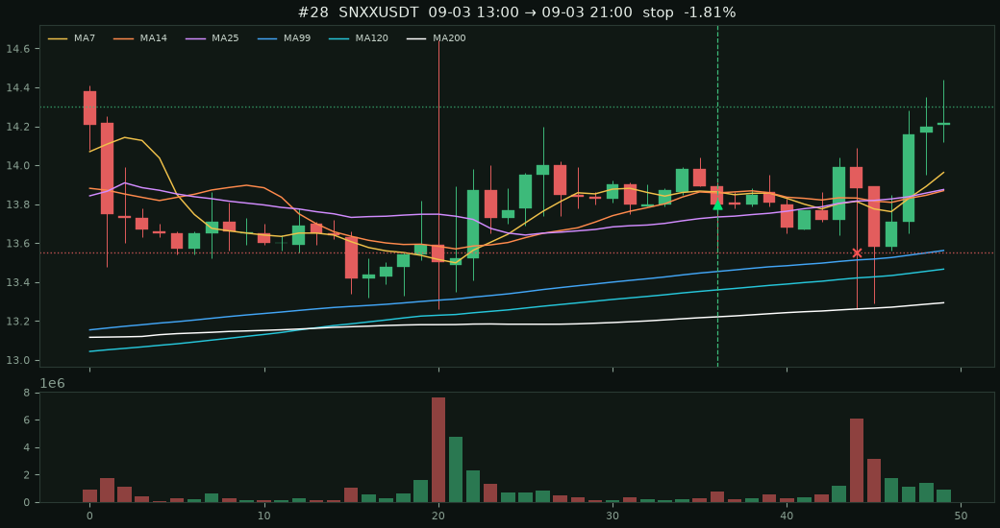
entry 0.1451 stop 0.13327 target 0.16876 exit 0.15407 time +6.18% fwd +1h +5.18% +4h +4.43% +8h +6.18% +24h +55.94%
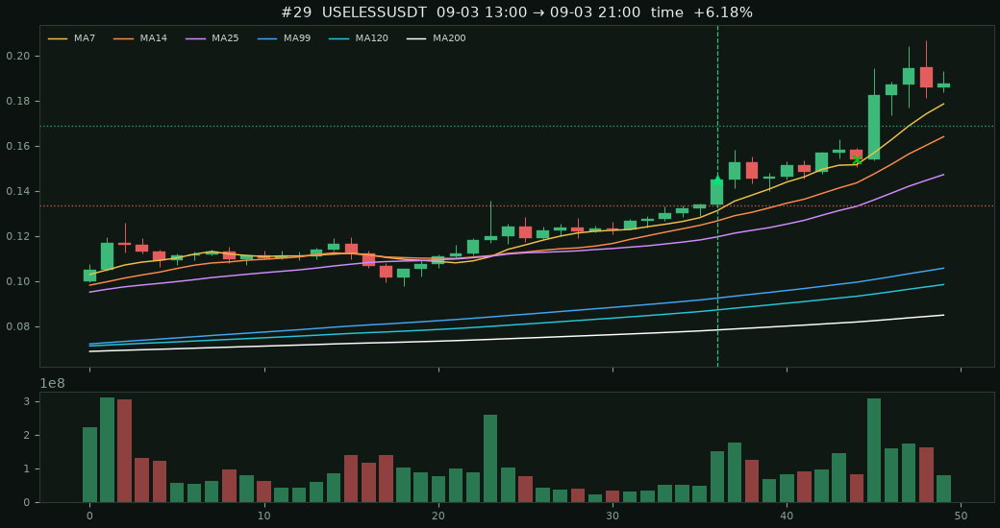
entry 0.024795 stop 0.022906 target 0.028573 exit 0.028573 target +15.24% fwd +1h +11.26% +4h +18.68% +8h +57.48% +24h +25.64%
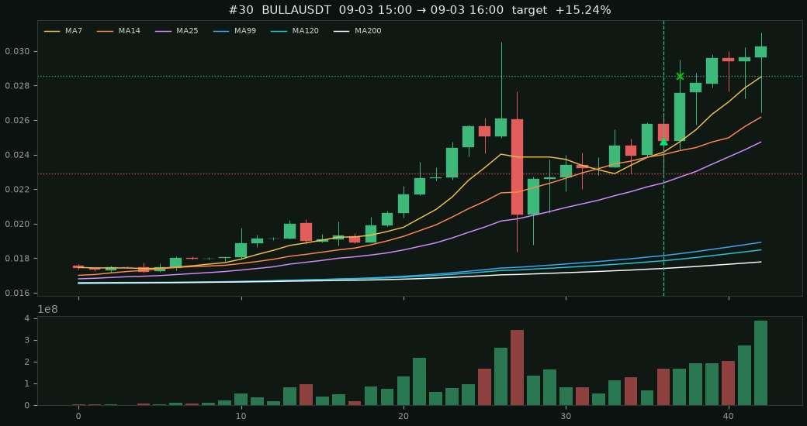
entry 0.1655 stop 0.1538 target 0.1889 exit 0.1538 stop -7.07% fwd +1h -4.53% +4h -6.91% +8h -15.43% +24h -18.33%
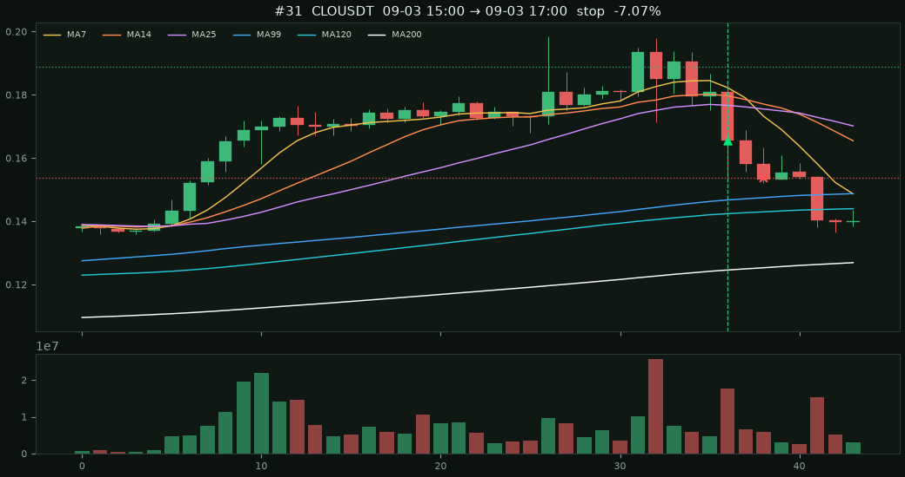
entry 0.08004 stop 0.07859 target 0.08294 exit 0.07859 stop -1.81% fwd +1h -0.54% +4h -0.94% +8h +4.05% +24h -1.86%
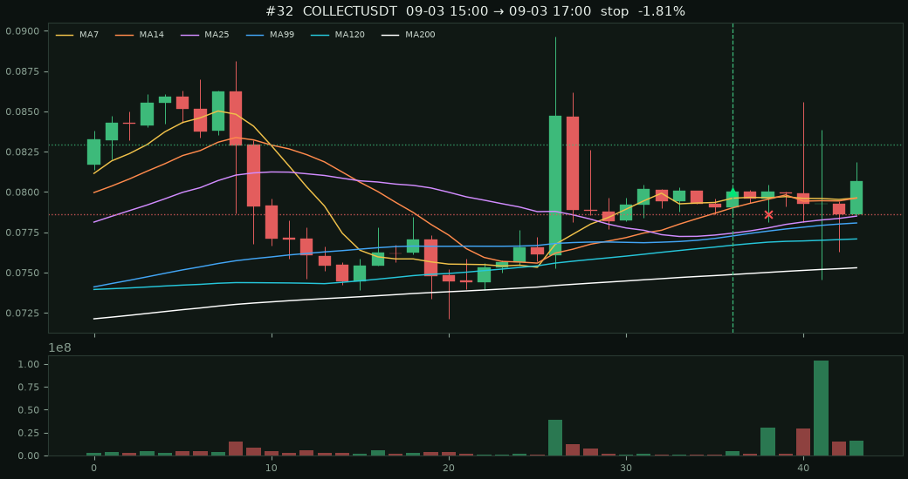
entry 0.542 stop 0.5008 target 0.6244 exit 0.5008 stop -7.60% fwd +1h -3.08% +4h -1.94% +8h +23.41% +24h +17.79%
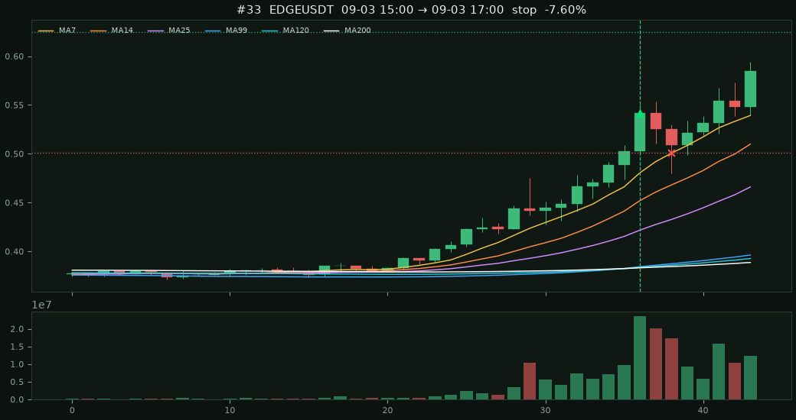
entry 0.05152 stop 0.05123 target 0.0521 exit 0.05123 stop -0.56% fwd +1h +0.27% +4h +0.17% +8h +0.50% +24h +4.74%
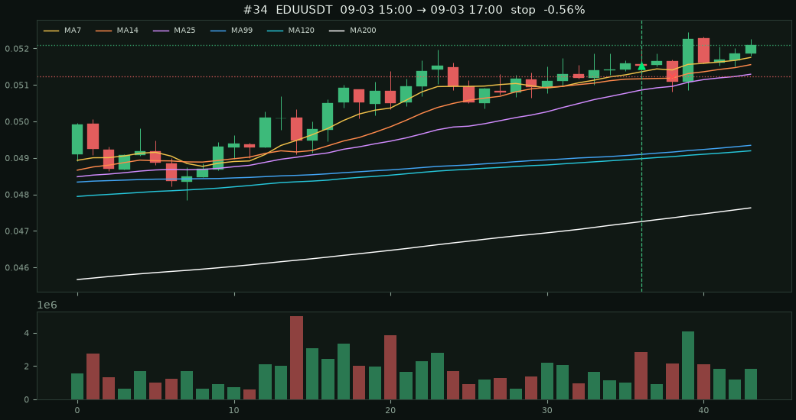
entry 0.7947 stop 0.790726 target 0.802647 exit 0.790726 stop -0.50% fwd +1h -1.36% +4h -0.53% +8h +0.52% +24h -3.15%
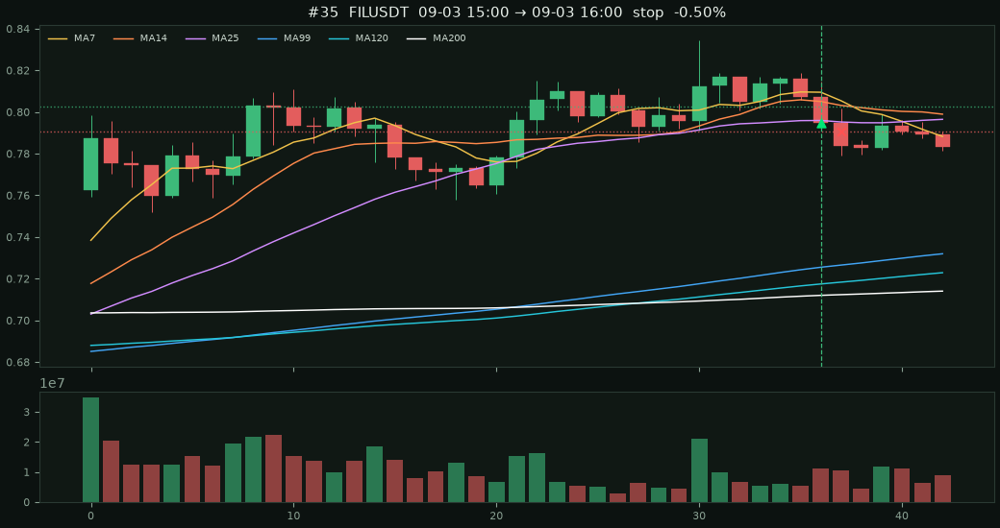
entry 2.99 stop 2.97505 target 3.0199 exit 3.0199 target +1.00% fwd +1h +0.03% +4h +0.10% +8h -2.84% +24h -2.11%
entry 1.8545 stop 1.84523 target 1.87305 exit 1.84523 stop -0.50% fwd +1h -0.29% +4h -0.22% +8h +2.86% +24h +4.58%
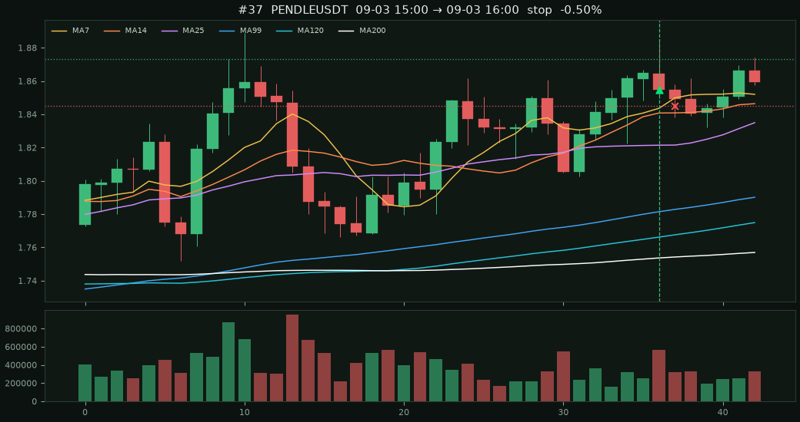
entry 1542.53 stop 1534.82 target 1557.96 exit 1534.82 stop -0.50% fwd +1h -0.42% +4h +0.57% +8h +1.26% +24h +3.44%
entry 0.02009 stop 0.0199 target 0.02047 exit 0.02047 target +1.89% fwd +1h +5.53% +4h +10.20% +8h +2.99% +24h +3.09%
entry 0.2746 stop 0.273227 target 0.277346 exit 0.277346 target +1.00% fwd +1h +0.84% +4h -0.04% +8h -1.38% +24h -1.35%
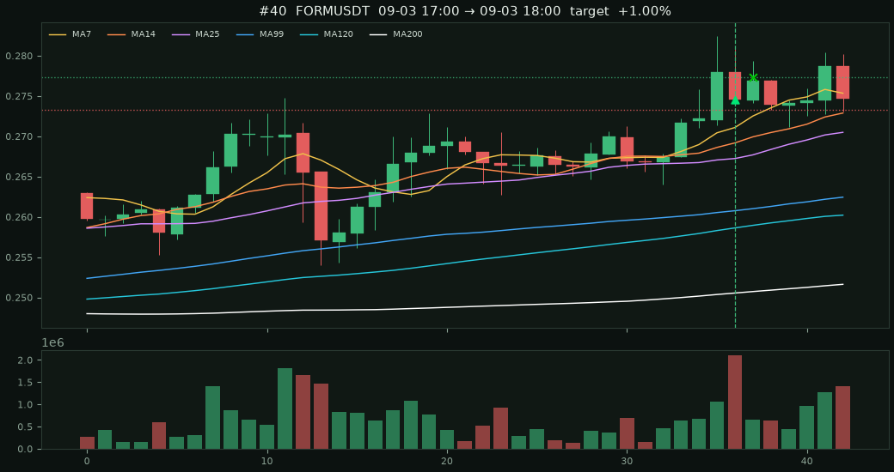
entry 0.011149 stop 0.010912 target 0.011623 exit 0.010912 stop -2.13% fwd +1h -7.50% +4h -3.37% +8h -9.99% +24h -7.84%
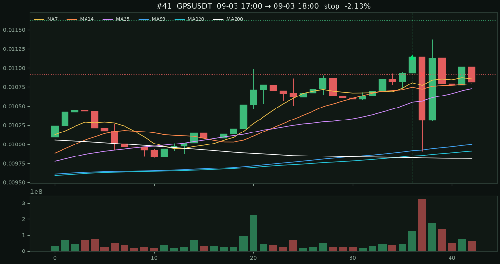
entry 3.831 stop 3.7752 target 3.9426 exit 3.9426 target +2.91% fwd +1h +0.02% +4h +2.67% +8h +9.83% +24h +19.18%
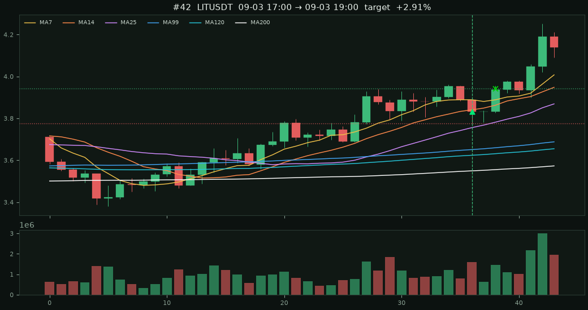
entry 0.02684 stop 0.0267058 target 0.0271084 exit 0.0267058 stop -0.50% fwd +1h +0.00% +4h -0.93% +8h +2.83% +24h +1.49%
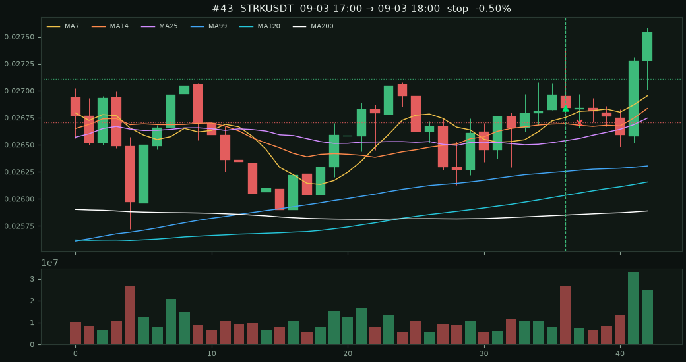
entry 0.05578 stop 0.0555011 target 0.0563378 exit 0.0563378 target +1.00% fwd +1h +0.82% +4h +20.47% +8h -2.31% +24h +4.39%
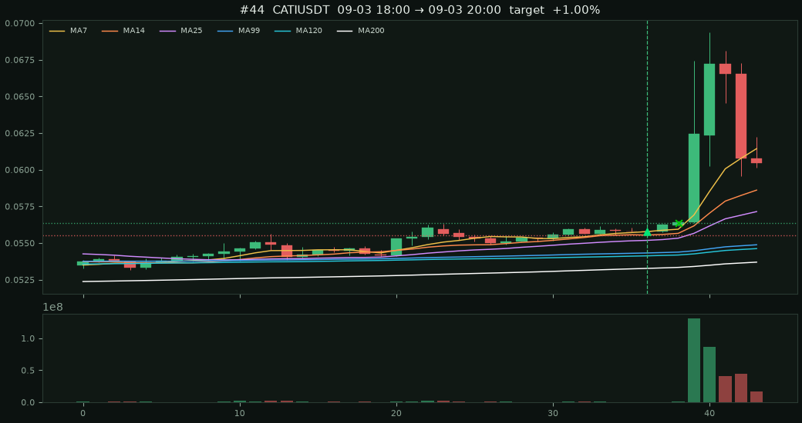
entry 0.02234 stop 0.02108 target 0.02486 exit 0.02108 stop -5.64% fwd +1h -3.67% +4h -1.48% +8h -7.52% +24h -8.55%
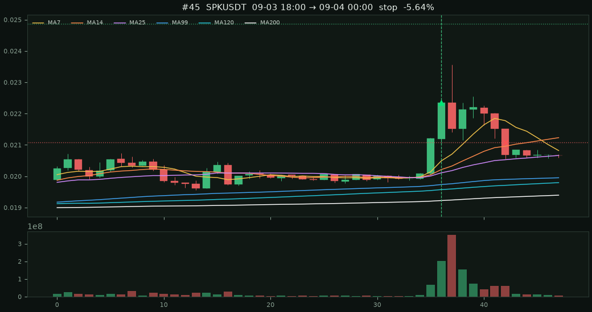
entry 0.07929 stop 0.07815 target 0.08157 exit 0.07815 stop -1.44% fwd +1h -0.05% +4h +5.03% +8h +1.93% +24h +1.01%
entry 0.381 stop 0.3728 target 0.3974 exit 0.3974 target +4.30% fwd +1h +0.58% +4h +1.29% +8h +3.91% +24h +3.31%
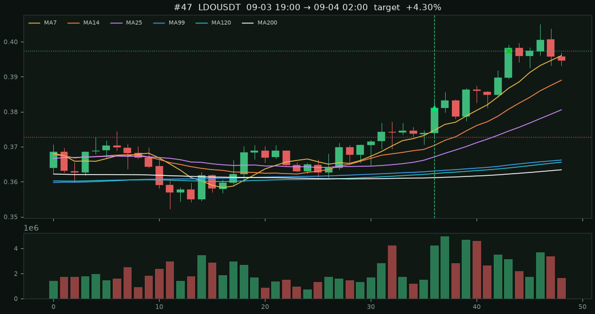
entry 597.06 stop 594.075 target 603.031 exit 603.031 target +1.00% fwd +1h +0.76% +4h +3.33% +8h +2.40% +24h +2.80%
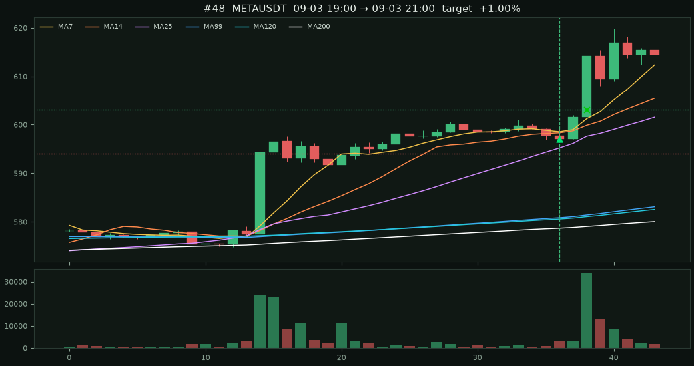
entry 362.08 stop 359.86 target 366.52 exit 366.52 target +1.23% fwd +1h +0.44% +4h +5.73% +8h +4.04% +24h +0.98%
entry 0.5544 stop 0.5207 target 0.6218 exit 0.6218 target +12.16% fwd +1h -1.12% +4h +10.82% +8h +11.26% +24h +16.63%
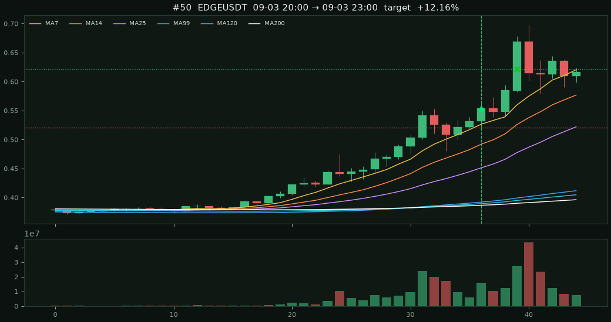
entry 0.06244 stop 0.05634 target 0.07464 exit 0.05634 stop -9.77% fwd +1h +7.62% +4h -3.22% +8h -11.19% +24h -6.52%
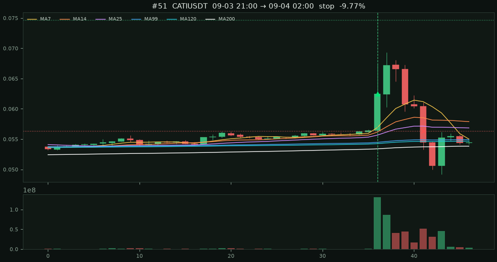
entry 0.2745 stop 0.2725 target 0.2785 exit 0.2785 target +1.46% fwd +1h +1.53% +4h -1.35% +8h +0.04% +24h -3.32%
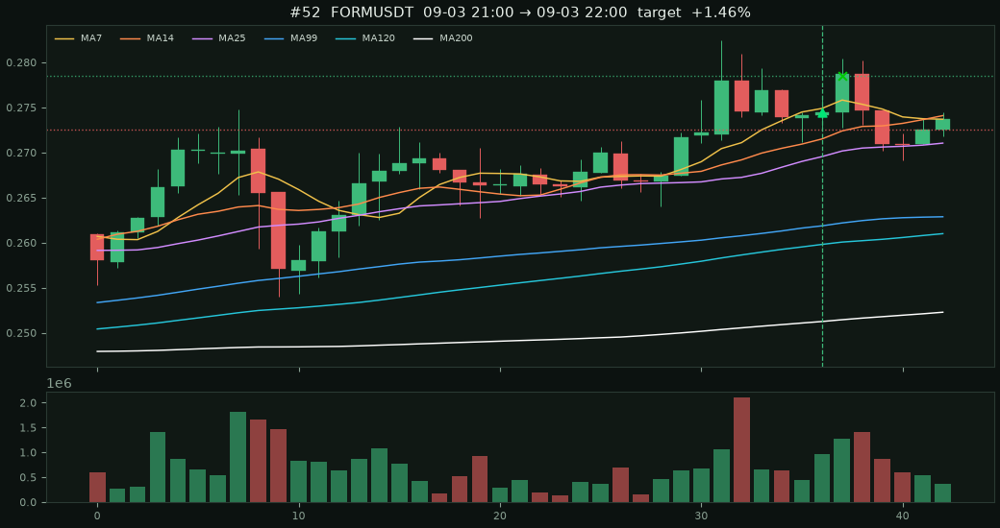
entry 54.41 stop 52.77 target 57.69 exit 52.77 stop -3.01% fwd +1h -2.32% +4h -4.45% +8h -4.82% +24h -14.76%
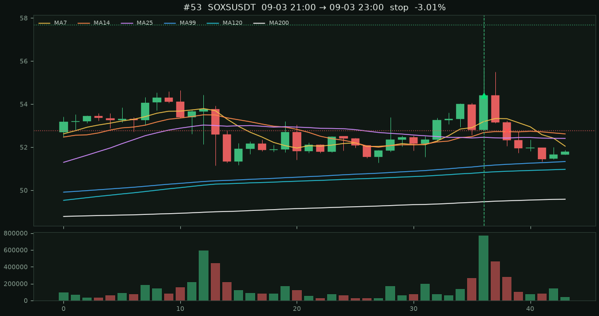
entry 4.0473 stop 3.8997 target 4.3425 exit 4.3425 target +7.29% fwd +1h +3.56% +4h +6.24% +8h +8.03% +24h +14.95%
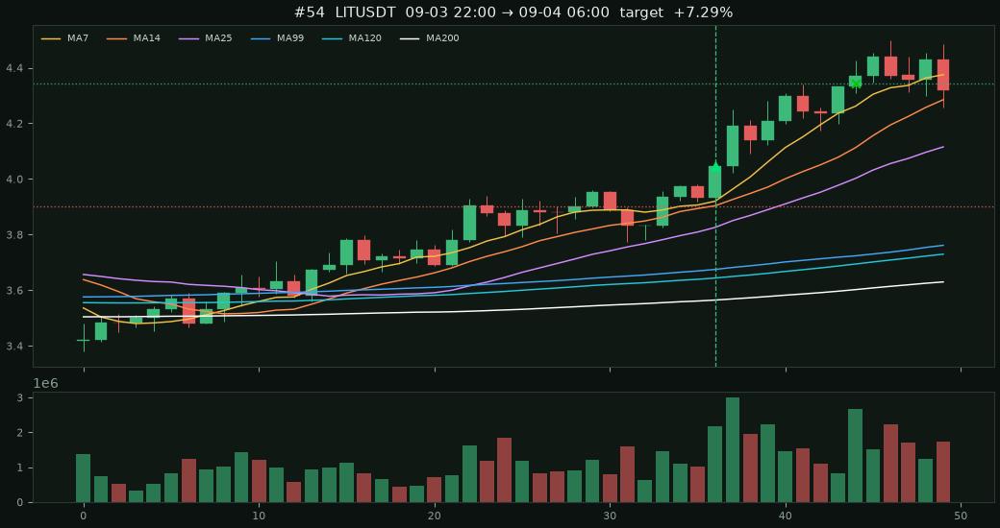
entry 0.03082 stop 0.02779 target 0.03688 exit 0.0295 time -4.28% fwd +1h -0.81% +4h +2.04% +8h -4.28% +24h -5.97%
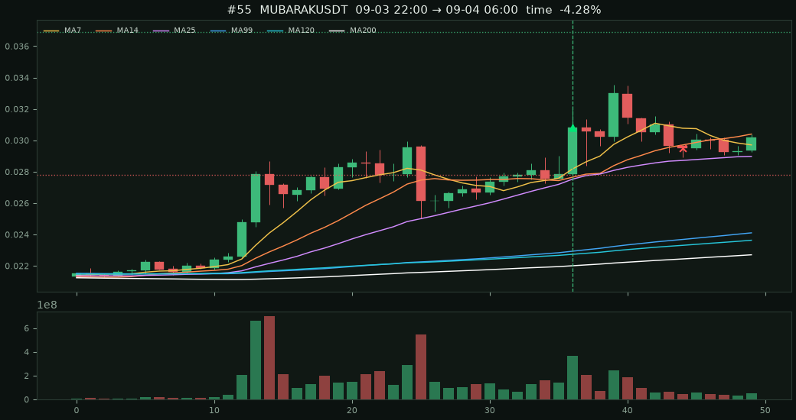
entry 0.02728 stop 0.02652 target 0.0288 exit 0.02769 time +1.50% fwd +1h +0.95% +4h +2.05% +8h +1.50% +24h -5.98%
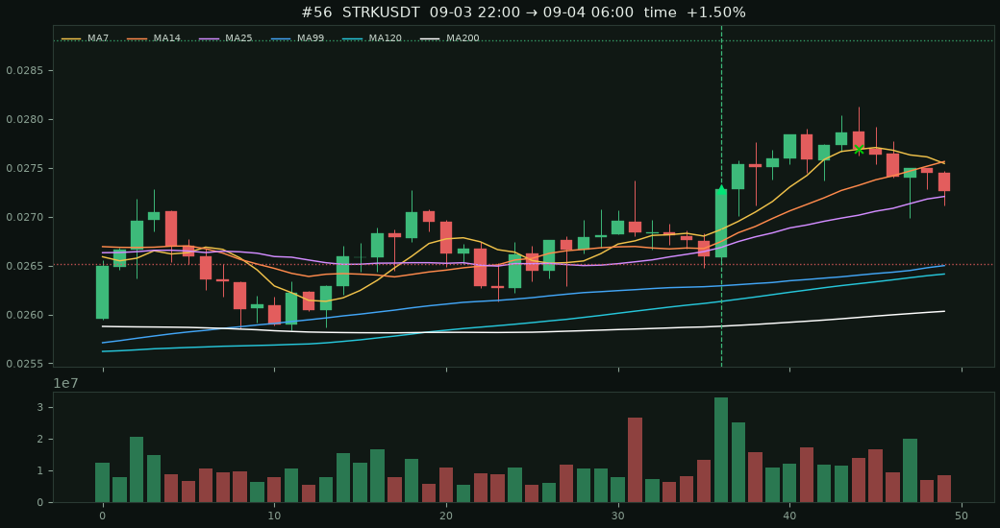
entry 0.18226 stop 0.1536 target 0.23958 exit 0.19488 time +6.92% fwd +1h +2.70% +4h +2.97% +8h +6.92% +24h +35.28%
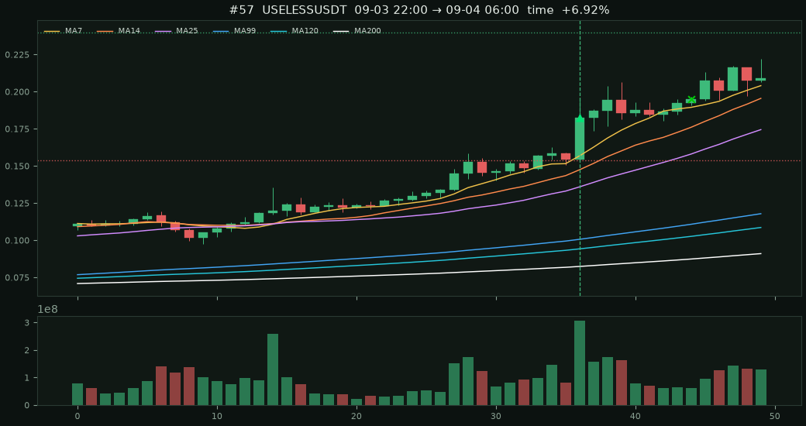
entry 0.05178 stop 0.0515 target 0.05234 exit 0.0515 stop -0.54% fwd +1h -0.73% +4h +0.93% +8h +1.37% +24h +4.65%
entry 1321.26 stop 1300.86 target 1362.06 exit 1362.06 target +3.09% fwd +1h +0.88% +4h +3.52% +8h +4.55% +24h +4.96%
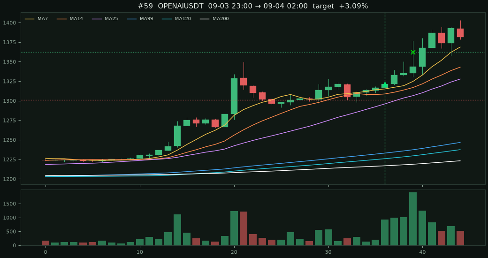
entry 0.08149 stop 0.08002 target 0.08443 exit 0.08002 stop -1.80% fwd +1h -0.91% +4h -2.06% +8h -1.07% +24h -1.68%
entry 0.04121 stop 0.03681 target 0.05001 exit 0.03965 time -3.79% fwd +1h -0.70% +4h -2.72% +8h -3.79% +24h +39.34%
entry 91.5 stop 90.75 target 93 exit 91.73 time +0.25% fwd +1h +0.04% +4h +0.21% +8h +0.25% +24h -0.14%
entry 0.009479 stop 0.009165 target 0.010107 exit 0.009479 time +0.00% fwd +1h -1.75% +4h -0.41% +8h +0.00% +24h -0.53%
entry 0.09419 stop 0.093719 target 0.0951319 exit 0.093719 stop -0.50% fwd +1h -0.02% +4h -0.97% +8h +0.45% +24h -3.86%
entry 0.02838 stop 0.025681 target 0.033778 exit 0.033778 target +19.02% fwd +1h -2.45% +4h +25.36% +8h +13.74% +24h -1.35%
entry 2.0047 stop 1.9905 target 2.0331 exit 1.9905 stop -0.71% fwd +1h +0.33% +4h +0.94% +8h +0.11% +24h -0.92%
entry 14.02 stop 13.69 target 14.68 exit 14.16 time +1.00% fwd +1h -0.64% +4h -0.57% +8h +1.00% +24h +23.75%
entry 2.708 stop 2.603 target 2.918 exit 2.603 stop -3.88% fwd +1h -0.30% +4h -4.84% +8h -5.54% +24h -4.47%
entry 0.05246 stop 0.05201 target 0.05336 exit 0.05201 stop -0.86% fwd +1h -0.27% +4h +0.76% +8h +1.54% +24h +5.47%
entry 6.346 stop 6.204 target 6.63 exit 6.204 stop -2.24% fwd +1h +0.54% +4h -0.22% +8h -2.00% +24h -2.47%
entry 0.4005 stop 0.3961 target 0.4093 exit 0.3961 stop -1.10% fwd +1h -1.17% +4h -1.12% +8h -3.70% +24h -5.17%
entry 132.52 stop 131.44 target 134.68 exit 134.68 target +1.63% fwd +1h +0.10% +4h +1.00% +8h +0.23% +24h -2.17%
entry 0.04771 stop 0.04638 target 0.05037 exit 0.05037 target +5.58% fwd +1h -0.17% +4h +1.84% +8h +4.02% +24h +3.54%
entry 47.44 stop 46.36 target 49.6 exit 46.36 stop -2.28% fwd +1h -1.96% +4h +8.45% +8h +5.06% +24h +31.83%
entry 328.28 stop 326.639 target 331.563 exit 327.47 time -0.25% fwd +1h +0.01% +4h +0.01% +8h -0.25% +24h -2.29%
entry 0.14532 stop 0.14059 target 0.15478 exit 0.14059 stop -3.25% fwd +1h -5.84% +4h -7.00% +8h -5.76% +24h -9.79%
entry 2.0298 stop 2.0173 target 2.0548 exit 2.0173 stop -0.62% fwd +1h -1.14% +4h -1.02% +8h -2.18% +24h -3.21%
entry 0.05823 stop 0.05561 target 0.06347 exit 0.05561 stop -4.50% fwd +1h +4.76% +4h +1.94% +8h -5.58% +24h -6.23%
entry 101.91 stop 101.4 target 102.929 exit 101.4 stop -0.50% fwd +1h -0.30% +4h -0.07% +8h +0.47% +24h -0.22%
entry 0.3699 stop 0.36 target 0.3897 exit 0.3766 time +1.81% fwd +1h -0.30% +4h -0.24% +8h +1.81% +24h -6.03%
entry 517.82 stop 514.21 target 525.04 exit 521.04 time +0.62% fwd +1h -0.16% +4h +0.23% +8h +0.62% +24h +0.75%
entry 0.5821 stop 0.579189 target 0.587921 exit 0.587921 target +1.00% fwd +1h +1.03% +4h -1.56% +8h -1.77% +24h -4.36%
entry 0.2781 stop 0.2749 target 0.2845 exit 0.2749 stop -1.15% fwd +1h -2.09% +4h -2.05% +8h -1.83% +24h -1.22%
entry 2.518 stop 2.501 target 2.552 exit 2.552 target +1.35% fwd +1h +0.64% +4h +1.39% +8h +1.63% +24h -1.63%
entry 0.3987 stop 0.3923 target 0.4115 exit 0.3923 stop -1.61% fwd +1h -0.68% +4h -2.83% +8h -2.43% +24h -1.98%
entry 1.9606 stop 1.9508 target 1.98021 exit 1.9508 stop -0.50% fwd +1h -0.60% +4h -1.17% +8h +0.94% +24h -1.46%
entry 1562.73 stop 1548.53 target 1591.13 exit 1591.13 target +1.82% fwd +1h -0.37% +4h +0.75% +8h +2.10% +24h +10.68%
entry 150.14 stop 149.389 target 151.641 exit 150.62 time +0.32% fwd +1h +0.07% +4h +0.34% +8h +0.32% +24h -1.50%
entry 373 stop 371.135 target 376.73 exit 371.135 stop -0.50% fwd +1h -0.21% +4h -0.72% +8h -0.68% +24h -5.14%
entry 0.002626 stop 0.00261287 target 0.00265226 exit 0.00265226 target +1.00% fwd +1h +0.42% +4h +0.61% +8h +4.49% +24h +5.10%
entry 5.963 stop 5.93 target 6.029 exit 5.93 stop -0.55% fwd +1h +0.12% +4h +5.05% +8h +8.23% +24h +19.24%
entry 0.009496 stop 0.00944852 target 0.00959096 exit 0.00944852 stop -0.50% fwd +1h -0.62% +4h -1.67% +8h +0.42% +24h +4.78%
entry 0.0275 stop 0.02699 target 0.02852 exit 0.02699 stop -1.85% fwd +1h -0.18% +4h -2.36% +8h -0.95% +24h -1.09%
entry 2.629 stop 2.613 target 2.661 exit 2.613 stop -0.61% fwd +1h -3.00% +4h -0.80% +8h -0.38% +24h +5.71%
entry 49.98 stop 47.04 target 55.86 exit 52.38 time +4.80% fwd +1h +2.94% +4h +1.08% +8h +4.80% +24h +35.91%
entry 0.6347 stop 0.6142 target 0.6757 exit 0.6142 stop -3.23% fwd +1h -3.15% +4h +2.16% +8h -0.33% +24h -2.63%
entry 6.102 stop 5.951 target 6.404 exit 6.404 target +4.95% fwd +1h +3.10% +4h +1.82% +8h +3.95% +24h +22.06%
entry 0.21205 stop 0.20892 target 0.21831 exit 0.20892 stop -1.48% fwd +1h -2.68% +4h +0.06% +8h +7.06% +24h +2.68%
entry 614.78 stop 611.706 target 620.928 exit 611.706 stop -0.50% fwd +1h -0.28% +4h -0.23% +8h -0.93% +24h -0.57%
entry 969.72 stop 961.33 target 986.5 exit 968.29 time -0.15% fwd +1h +0.00% +4h +0.66% +8h -0.15% +24h +4.64%
entry 31.31 stop 30.8 target 32.33 exit 31.29 time -0.06% fwd +1h +0.16% +4h +1.50% +8h -0.06% +24h +9.29%
entry 14.37 stop 14.15 target 14.81 exit 14.81 target +3.06% fwd +1h +0.97% +4h +2.78% +8h +0.35% +24h +23.52%
entry 1.9802 stop 1.9703 target 2 exit 1.9703 stop -0.50% fwd +1h -0.46% +4h +0.76% +8h -0.49% +24h +0.15%
entry 1377.11 stop 1370.22 target 1390.88 exit 1370.22 stop -0.50% fwd +1h -2.43% +4h -0.90% +8h +0.11% +24h +3.90%
entry 0.009669 stop 0.009525 target 0.009957 exit 0.009957 target +2.98% fwd +1h +0.34% +4h +4.74% +8h -1.12% +24h +3.14%
entry 0.24446 stop 0.22291 target 0.28756 exit 0.28756 target +17.63% fwd +1h -0.47% +4h -2.92% +8h +0.86% +24h -4.16%
entry 0.00267 stop 0.002643 target 0.002724 exit 0.002724 target +2.02% fwd +1h +2.77% +4h +0.11% +8h -3.03% +24h +15.13%
entry 6.077 stop 5.967 target 6.297 exit 6.297 target +3.62% fwd +1h +6.20% +4h +4.11% +8h +2.29% +24h +21.47%
entry 166.09 stop 165.13 target 168.01 exit 165.13 stop -0.58% fwd +1h +0.35% +4h -1.29% +8h +4.09% +24h +5.89%
entry 1949.51 stop 1905.28 target 2037.97 exit 1905.28 stop -2.27% fwd +1h -0.03% +4h -0.43% +8h -2.40% +24h -0.91%
entry 0.6109 stop 0.6041 target 0.6245 exit 0.6041 stop -1.11% fwd +1h +3.55% +4h +4.01% +8h -3.68% +24h +3.94%
entry 0.05414 stop 0.05326 target 0.0559 exit 0.05326 stop -1.63% fwd +1h -0.09% +4h -2.46% +8h +0.76% +24h +12.86%
entry 2.574 stop 2.556 target 2.61 exit 2.556 stop -0.70% fwd +1h -0.39% +4h -4.04% +8h -4.16% +24h +2.41%
entry 0.010127 stop 0.009899 target 0.010583 exit 0.010583 target +4.50% fwd +1h +5.07% +4h -5.59% +8h -8.69% +24h +0.55%
entry 0.6329 stop 0.5927 target 0.7133 exit 0.6054 time -4.35% fwd +1h -1.71% +4h -4.77% +8h -4.35% +24h -0.77%
entry 231.71 stop 230.551 target 234.027 exit 230.551 stop -0.50% fwd +1h -0.12% +4h +0.31% +8h -0.38% +24h -0.43%
entry 149.47 stop 148.723 target 150.965 exit 148.723 stop -0.50% fwd +1h -0.47% +4h -0.27% +8h -1.09% +24h -0.15%
entry 0.22703 stop 0.21959 target 0.24191 exit 0.21959 stop -3.28% fwd +1h -2.48% +4h +0.30% +8h -0.76% +24h -6.26%
entry 131.21 stop 129.15 target 135.33 exit 129.15 stop -1.57% fwd +1h +0.08% +4h +0.41% +8h -1.01% +24h -0.43%
entry 189.54 stop 188.31 target 192 exit 192 target +1.30% fwd +1h +7.56% +4h +12.54% +8h +10.44% +24h +12.08%
entry 0.3551 stop 0.3526 target 0.3601 exit 0.3526 stop -0.70% fwd +1h +1.15% +4h +1.21% +8h -0.14% +24h +2.42%
entry 49.99 stop 49.41 target 51.15 exit 49.41 stop -1.16% fwd +1h +0.44% +4h +9.26% +8h +15.24% +24h +36.83%
entry 512.27 stop 509.68 target 517.45 exit 509.68 stop -0.51% fwd +1h +2.79% +4h +1.94% +8h +1.85% +24h +2.18%
entry 2.47 stop 2.224 target 2.962 exit 2.473 time +0.12% fwd +1h +0.00% +4h +0.08% +8h +0.12% +24h +6.48%
entry 1.9256 stop 1.91597 target 1.94486 exit 1.91597 stop -0.50% fwd +1h -1.07% +4h +0.69% +8h -0.15% +24h +1.37%
entry 0.006189 stop 0.005992 target 0.006583 exit 0.006348 time +2.57% fwd +1h +0.87% +4h +2.25% +8h +2.57% +24h +8.63%
entry 1577.19 stop 1562.56 target 1606.45 exit 1606.45 target +1.86% fwd +1h +5.06% +4h +9.97% +8h +9.88% +24h +11.57%
entry 14.42 stop 14.18 target 14.9 exit 14.9 target +3.33% fwd +1h +10.19% +4h +19.83% +8h +19.56% +24h +22.88%
entry 0.6161 stop 0.6125 target 0.6233 exit 0.6125 stop -0.58% fwd +1h -0.24% +4h -0.58% +8h -2.71% +24h -3.85%
entry 0.00257 stop 0.002491 target 0.002728 exit 0.002728 target +6.15% fwd +1h +0.66% +4h +2.57% +8h +5.56% +24h +15.45%
entry 986.16 stop 968.43 target 1021.62 exit 968.43 stop -1.80% fwd +1h +0.06% +4h +4.76% +8h +3.72% +24h +2.77%
entry 6.126 stop 6.011 target 6.356 exit 6.011 stop -1.88% fwd +1h +0.46% +4h +6.45% +8h +9.40% +24h +19.59%
entry 1000.33 stop 964.86 target 1071.27 exit 1014.16 time +1.38% fwd +1h +0.10% +4h -0.06% +8h +1.38% +24h +1.47%
entry 33.29 stop 31.08 target 37.71 exit 34.13 time +2.52% fwd +1h +0.24% +4h -0.06% +8h +2.52% +24h +2.88%
entry 234.71 stop 230.01 target 244.11 exit 230.01 stop -2.00% fwd +1h -0.98% +4h -1.80% +8h -1.91% +24h -1.60%
entry 169.95 stop 163.56 target 182.73 exit 175.32 time +3.16% fwd +1h -0.01% +4h +2.15% +8h +3.16% +24h +3.35%
entry 0.06324 stop 0.05761 target 0.0745 exit 0.0646 time +2.15% fwd +1h +0.62% +4h +1.87% +8h +2.15% +24h —
entry 247.54 stop 244.02 target 254.58 exit 244.02 stop -1.42% fwd +1h -0.72% +4h +1.15% +8h +7.29% +24h —
entry 0.010389 stop 0.0103371 target 0.0104929 exit 0.0103371 stop -0.50% fwd +1h -1.10% +4h -0.83% +8h -0.47% +24h —
entry 1033.12 stop 984.7 target 1129.96 exit 1018.04 time -1.46% fwd +1h -2.52% +4h -1.00% +8h -1.46% +24h —
entry 6.521 stop 6.205 target 7.153 exit 7.153 target +9.69% fwd +1h +0.08% +4h +2.78% +8h +9.03% +24h —
entry 0.089979 stop 0.084914 target 0.100109 exit 0.084914 stop -5.63% fwd +1h +3.40% +4h -2.70% +8h -7.11% +24h —
entry 253.05 stop 245.08 target 268.99 exit 268.99 target +6.30% fwd +1h -1.06% +4h +5.15% +8h +4.40% +24h —
entry 2.166 stop 2.013 target 2.472 exit 2.225 time +2.72% fwd +1h -2.77% +4h +0.28% +8h +2.72% +24h —
entry 1738.45 stop 1704.64 target 1806.07 exit 1751.16 time +0.73% fwd +1h -0.31% +4h -0.33% +8h +0.73% +24h —
entry 17.35 stop 16.72 target 18.61 exit 17.55 time +1.15% fwd +1h -0.63% +4h -0.75% +8h +1.15% +24h —
entry 57.61 stop 55.08 target 62.67 exit 62.67 target +8.78% fwd +1h +2.86% +4h +12.31% +8h +20.43% +24h —
entry 0.003187 stop 0.00317107 target 0.00321887 exit 0.00317107 stop -0.50% fwd +1h +0.06% +4h +4.33% +8h +3.14% +24h —
entry 0.002856 stop 0.00271 target 0.003148 exit 0.003148 target +10.22% fwd +1h +1.19% +4h -2.31% +8h +8.44% +24h —
entry 0.023693 stop 0.02106 target 0.028959 exit 0.028386 time +19.81% fwd +1h +3.36% +4h +11.27% +8h +19.81% +24h —
entry 0.07947 stop 0.0790726 target 0.0802647 exit 0.0790726 stop -0.50% fwd +1h -0.49% +4h +2.09% +8h +2.33% +24h —
entry 522.11 stop 519.499 target 527.331 exit 522.38 time +0.05% fwd +1h -0.08% +4h -0.01% +8h +0.05% +24h —
entry 0.26482 stop 0.2542 target 0.28606 exit 0.2542 stop -4.01% fwd +1h +0.31% +4h -12.51% +8h -10.95% +24h —
entry 2.72 stop 2.612 target 2.936 exit 2.806 time +3.16% fwd +1h -1.40% +4h +2.39% +8h +3.16% +24h —
entry 0.3084 stop 0.30592 target 0.31336 exit 0.31336 target +1.61% fwd +1h +0.67% +4h +0.48% +8h -0.60% +24h —
entry 0.08294 stop 0.07678 target 0.09526 exit 0.07678 stop -7.43% fwd +1h -4.81% +4h -6.41% +8h -6.82% +24h —
entry 0.057 stop 0.04988 target 0.07124 exit 0.05242 time -8.04% fwd +1h -4.74% +4h -6.91% +8h -8.04% +24h —
entry 0.06841 stop 0.06616 target 0.07291 exit 0.06788 time -0.77% fwd +1h +1.56% +4h -1.18% +8h -0.77% +24h —
entry 0.009247 stop 0.009166 target 0.009409 exit 0.009409 target +1.75% fwd +1h -0.25% +4h -0.08% +8h -0.22% +24h —
entry 34.06 stop 33.8897 target 34.4006 exit 34.4006 target +1.00% fwd +1h -0.09% +4h +1.38% +8h +0.88% +24h —
entry 175.63 stop 174.752 target 177.386 exit 175.71 time +0.05% fwd +1h -0.04% +4h +0.40% +8h +0.05% +24h —
entry 262.66 stop 261.347 target 265.287 exit 265.287 target +1.00% fwd +1h +0.62% +4h +0.67% +8h +0.78% +24h —
entry 0.02782 stop 0.02722 target 0.02902 exit 0.02722 stop -2.16% fwd +1h -0.58% +4h -0.29% +8h -1.58% +24h —
entry 95.53 stop 95.0524 target 96.4853 exit 96.12 time +0.62% fwd +1h +0.21% +4h +0.28% +8h +0.62% +24h —
entry 0.13328 stop 0.132614 target 0.134613 exit 0.132614 stop -0.50% fwd +1h -0.21% +4h -1.32% +8h -3.68% +24h —
entry 0.014548 stop 0.014448 target 0.014748 exit 0.014748 target +1.37% fwd +1h +4.03% +4h +2.77% +8h +3.46% +24h —
entry 0.08142 stop 0.07642 target 0.09142 exit 0.07792 time -4.30% fwd +1h -1.31% +4h -4.32% +8h -4.30% +24h —
entry 1018.9 stop 1013.81 target 1029.09 exit 1013.81 stop -0.50% fwd +1h +0.04% +4h -0.26% +8h -0.38% +24h —
entry 2.235 stop 2.183 target 2.339 exit 2.198 time -1.66% fwd +1h +1.61% +4h -0.13% +8h -1.66% +24h —
entry 1770.06 stop 1761.01 target 1788.16 exit 1761.01 stop -0.51% fwd +1h -0.06% +4h -0.67% +8h -0.63% +24h —
entry 17.95 stop 17.74 target 18.37 exit 17.74 stop -1.17% fwd +1h +0.06% +4h -1.50% +8h -1.45% +24h —
entry 0.6499 stop 0.6353 target 0.6791 exit 0.6353 stop -2.25% fwd +1h -1.29% +4h -3.37% +8h -2.09% +24h —
entry 7.963 stop 7.344 target 9.201 exit 7.344 stop -7.77% fwd +1h -0.55% +4h -9.29% +8h -7.99% +24h —
entry 0.010399 stop 0.010166 target 0.010865 exit 0.010166 stop -2.24% fwd +1h +0.33% +4h -3.71% +8h -5.44% +24h —
entry 0.003345 stop 0.003265 target 0.003505 exit 0.003265 stop -2.39% fwd +1h -0.96% +4h -0.93% +8h -2.45% +24h —
entry 727.69 stop 721.99 target 739.09 exit 739.09 target +1.57% fwd +1h +1.52% +4h +2.88% +8h +5.86% +24h —
entry 91.11 stop 90.6544 target 92.0211 exit 91.54 time +0.47% fwd +1h +0.00% +4h -0.01% +8h +0.47% +24h —
entry 53.58 stop 52.76 target 55.22 exit 52.76 stop -1.53% fwd +1h +0.28% +4h -1.25% +8h +0.37% +24h —
entry 0.016656 stop 0.0162 target 0.017568 exit 0.017568 target +5.48% fwd +1h +12.55% +4h +17.27% +8h — +24h —
entry 211.11 stop 210.054 target 213.221 exit 210.7 open -0.19% fwd +1h -0.08% +4h +0.54% +8h — +24h —
entry 0.3008 stop 0.2831 target 0.3362 exit 0.2831 stop -5.88% fwd +1h -2.23% +4h -2.03% +8h — +24h —
entry 0.03199 stop 0.03048 target 0.03501 exit 0.03048 stop -4.72% fwd +1h -0.31% +4h -3.63% +8h — +24h —
entry 34.27 stop 34.0987 target 34.6127 exit 34.25 open -0.06% fwd +1h -0.18% +4h +0.47% +8h — +24h —
entry 0.4474 stop 0.445163 target 0.451874 exit 0.445163 stop -0.50% fwd +1h +0.69% +4h -2.84% +8h — +24h —
entry 0.09221 stop 0.08233 target 0.11197 exit 0.08233 stop -10.71% fwd +1h +2.39% +4h -22.09% +8h — +24h —
entry 0.0611 stop 0.05907 target 0.06516 exit 0.05907 stop -3.32% fwd +1h -0.87% +4h -3.99% +8h — +24h —
entry 0.05343 stop 0.05239 target 0.05551 exit 0.05239 stop -1.95% fwd +1h -0.67% +4h -1.40% +8h — +24h —
entry 0.11689 stop 0.10742 target 0.13583 exit 0.12186 open +4.25% fwd +1h -0.19% +4h +5.74% +8h — +24h —
entry 0.628 stop 0.6234 target 0.6372 exit 0.6372 target +1.46% fwd +1h +0.89% +4h +1.32% +8h — +24h —
entry 0.02159 stop 0.02101 target 0.02275 exit 0.02101 stop -2.69% fwd +1h -5.79% +4h -2.78% +8h — +24h —
entry 0.064682 stop 0.057261 target 0.079524 exit 0.057261 stop -11.47% fwd +1h -9.42% +4h +14.73% +8h — +24h —
entry 0.05668 stop 0.05604 target 0.05796 exit 0.05604 stop -1.13% fwd +1h -1.20% +4h +2.59% +8h — +24h —
entry 0.6537 stop 0.6256 target 0.7099 exit 0.6256 stop -4.30% fwd +1h -2.26% +4h -4.85% +8h — +24h —
entry 95.86 stop 95.3807 target 96.8186 exit 96.31 open +0.47% fwd +1h +0.05% +4h — +8h — +24h —
entry 613.63 stop 610.562 target 619.766 exit 614.3 open +0.11% fwd +1h +0.20% +4h — +8h — +24h —
entry 0.006743 stop 0.006669 target 0.006891 exit 0.006669 stop -1.10% fwd +1h -0.30% +4h — +8h — +24h —
entry 0.010389 stop 0.010283 target 0.010601 exit 0.010283 stop -1.02% fwd +1h -0.27% +4h — +8h — +24h —
entry 1762.6 stop 1753.79 target 1780.23 exit 1760.03 open -0.15% fwd +1h -0.17% +4h — +8h — +24h —
entry 17.78 stop 17.64 target 18.06 exit 17.74 open -0.22% fwd +1h -0.34% +4h — +8h — +24h —
entry 0.005446 stop 0.005399 target 0.00554 exit 0.00554 target +1.73% fwd +1h +0.68% +4h — +8h — +24h —
entry 0.0967 stop 0.09476 target 0.10058 exit 0.09544 open -1.30% fwd +1h -0.75% +4h — +8h — +24h —
entry 0.8276 stop 0.7887 target 0.9054 exit 0.7887 stop -4.70% fwd +1h -1.00% +4h — +8h — +24h —
entry 7.543 stop 7.492 target 7.645 exit 7.555 open +0.16% fwd +1h -0.13% +4h — +8h — +24h —
entry 2.2101 stop 2.1312 target 2.3679 exit 2.2349 open +1.12% fwd +1h +0.07% +4h — +8h — +24h —
entry 68.4 stop 67.01 target 71.18 exit 68.3 open -0.15% fwd +1h +0.86% +4h — +8h — +24h —
entry 0.9174 stop 0.9043 target 0.9436 exit 0.9138 open -0.39% fwd +1h -0.17% +4h — +8h — +24h —
entry 0.06832 stop 0.06791 target 0.06914 exit 0.06791 stop -0.60% fwd +1h -1.39% +4h — +8h — +24h —
entry 11.831 stop 11.72 target 12.053 exit 11.881 open +0.42% fwd +1h +0.08% +4h — +8h — +24h —
entry 53.58 stop 52.87 target 55 exit 53.78 open +0.37% fwd +1h +0.43% +4h — +8h — +24h —
entry 0.8001 stop 0.7844 target 0.8315 exit 0.799 open -0.14% fwd +1h -0.82% +4h — +8h — +24h —
entry 18.047 stop 17.822 target 18.497 exit 18.497 target +2.49% fwd +1h +2.30% +4h — +8h — +24h —
entry 0.217 stop 0.2117 target 0.2276 exit 0.2149 open -0.97% fwd +1h -0.32% +4h — +8h — +24h —
entry 0.13312 stop 0.132454 target 0.134451 exit 0.134451 target +1.00% fwd +1h +0.95% +4h — +8h — +24h —
entry 523.75 stop 521.131 target 528.987 exit 522.76 open -0.19% fwd +1h -0.19% +4h — +8h — +24h —
entry 0.08034 stop 0.0799383 target 0.0811434 exit 0.08074 open +0.50% fwd +1h +0.50% +4h — +8h — +24h —
entry 96.19 stop 95.709 target 97.1519 exit 96.14 open -0.05% fwd +1h -0.05% +4h — +8h — +24h —
entry 1412.17 stop 1405.11 target 1426.29 exit 1420.25 open +0.57% fwd +1h +0.57% +4h — +8h — +24h —
entry 149.27 stop 148.524 target 150.763 exit 149.4 open +0.09% fwd +1h +0.09% +4h — +8h — +24h —
entry 2.956 stop 2.842 target 3.184 exit 2.956 open +0.00% fwd +1h — +4h — +8h — +24h —
entry 1.546 stop 1.53827 target 1.56146 exit 1.546 open +0.00% fwd +1h — +4h — +8h — +24h —
entry 0.06712 stop 0.06377 target 0.07382 exit 0.06712 open +0.00% fwd +1h — +4h — +8h — +24h —
entry 0.01039 stop 0.010338 target 0.0104939 exit 0.01039 open +0.00% fwd +1h — +4h — +8h — +24h —
entry 6.348 stop 6.239 target 6.566 exit 6.348 open +0.00% fwd +1h — +4h — +8h — +24h —